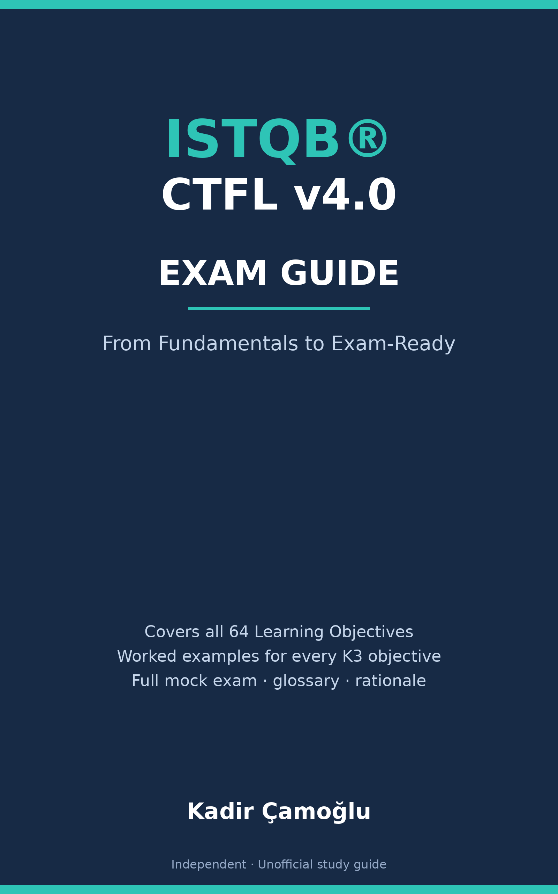

ISTQB® CTFL v4.0 Exam Guide: From Fundamentals to Exam-Ready

Independent · Unofficial study guide — not affiliated with or endorsed by ISTQB®
Covers all 64 Learning Objectives of the ISTQB® Certified Tester Foundation Level Syllabus v4.0 (technical baseline: v4.0.1 errata) — with worked examples for every K3 objective
Built on what the exam actually measures. Readable for a complete beginner, accurate for an experienced tester.
Kadir Çamoğlu
| Edition | First Edition (public draft) |
| Exam covered | ISTQB® Certified Tester Foundation Level (CTFL) |
| Syllabus | CTFL Syllabus v4.0 (April 2023); technical baseline v4.0.1 (errata release — LO wording/terminology aligned to it) |
| Exam structure source | ISTQB® Exam Structure Tables v1.18 · Exam Structures and Rules v1.2 |
| Format covered | 40 questions · 60 minutes (+25% extension depends on your Member Board or exam provider — see How the CTFL Exam Works) · pass mark 26/40 (65%) |